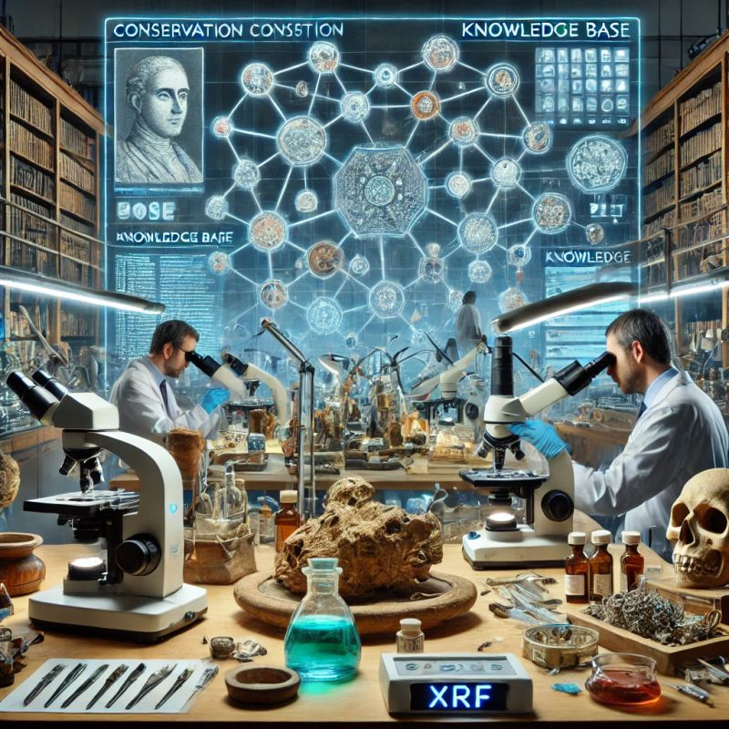
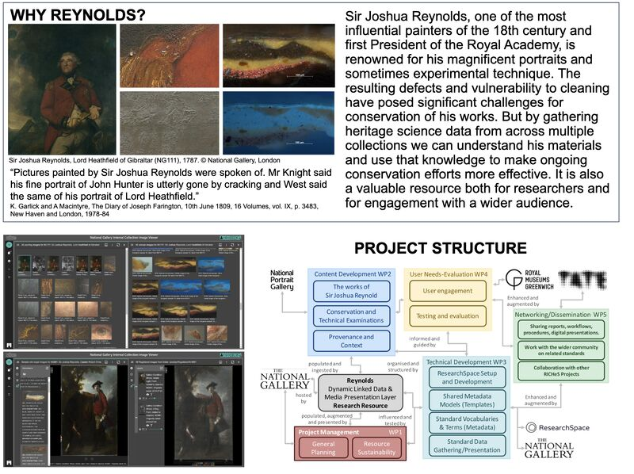
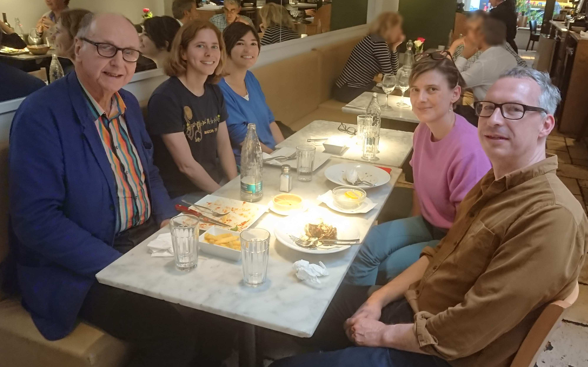

News
Kartography partner with The National Archives

Kartography will be partnering with The National Archives (TNA) as part of the UKRI RicHES heritage science data service project (HSDS).
TNA's Collection Care Department use the innovative ResearchSpace knowledge base platform (www.researchspace.org), a transdiscipinary system which uses Semantic Linked Data and takes full advantage of semantic ontologies like the CIDOC CRM.
Kartography partner with The National Gallery

Kartography CIC will be partnering in a National Gallery, London, project in the design and creation of the 'Reynolds Digital Research Resource', funded by UKRI.
This multidisciplinary project is particularly concerned with heritage science for conservation using different types and sources of data. It is a collaborative effort involving the synthesis of information from different collections and using the native Semantic Linked Data environment of ResearchSpace, a natural and flexible environment, enabling the full benefits of the CIDOC CRM ontology.
Stephen Willats - New Exhibition, Time Tumbler

When Stephen Willats met ResearchSpace - systems theory with historical contingency reprtesented in art.